5 ChimeraX
ChimeraX is a widely-used, open source software package for macromolecular visualisation and analysis. It is free for academic, government, nonprofit, and personal users.
5.1 Where can I download ChimeraX?
ChimeraX is available for download from the UC San Francisco website.
5.2 How do I use ChimeraX?
Once installed on your machine, use the ChimeraX application icon to start the program. You will be greeted by the standard ChimeraX landing screen (Figure 5.1).
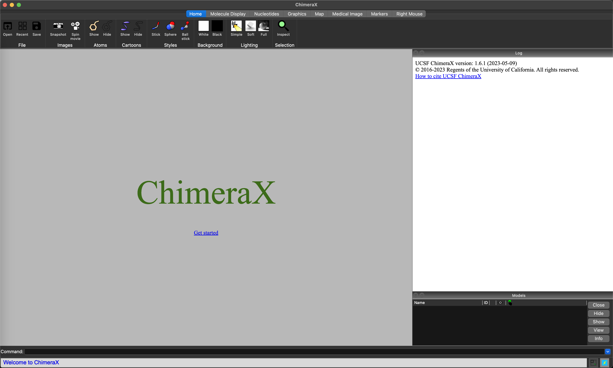
ChimeraX landing screen.5.2.1 ChimeraX layout
The ChimeraX screen is divided into four main areas.
- Along the top of the window is a ribbon of icons, and a list of category buttons. Choosing buttons changes the icon/action set.
- Along the bottom of the screen is a command line interface, where commands can be entered to control
ChimeraX. - On the right hand side is the log window which provides useful information and outputs. This can be toggled on and off with the leftmost button at the bottom right-hand corner (or by entering the
ui windowfill togglecommand in the command line interface). - The largest part of the screen is the main visualisation window, and this can be expanded to fill the full screen width by toggling the log window off.
The log window updates with the equivalent command when icons or buttons are used. This is a useful way to learn commands for scripting ChimeraX.
5.3 Loading a structure
Once you have downloaded a structure from RCSB/PDB, there are three ways to load it into ChimeraX.
- Click on the
Openicon in theHomeribbon, and use the file dialogue to select your file. - Use
File -> Openin the menu bar (or Cmd-O) to bring up the file dialogue box to select your file. - Enter
open [PATH TO FILE]in the command line interface, specifying the file you want to open.
Once the file is loaded, you will be presented with the default view, and information in the log window (Figure 5.2). The model will also be visible in the window at the lower right of the screen.
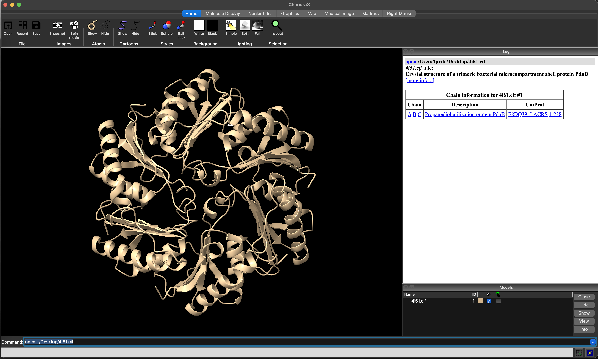
ChimeraX view after loading the 4I61 structure.5.4 Changing the appearance of the structure.
5.4.1 Switching from cartoons to atoms
By default, ChimeraX presents a cartoon view of the loaded model. In the Home riboon, you can use the Show and Hide Cartoons icons to show or hide this representation, and the Show and Hide Atoms icons to show or hide an atom-level representation (e.g. Figure 5.3).
- Click on
Show Atoms - Click on
Hide Cartoons
or in the command line interface, enter
show atoms
hide cartoons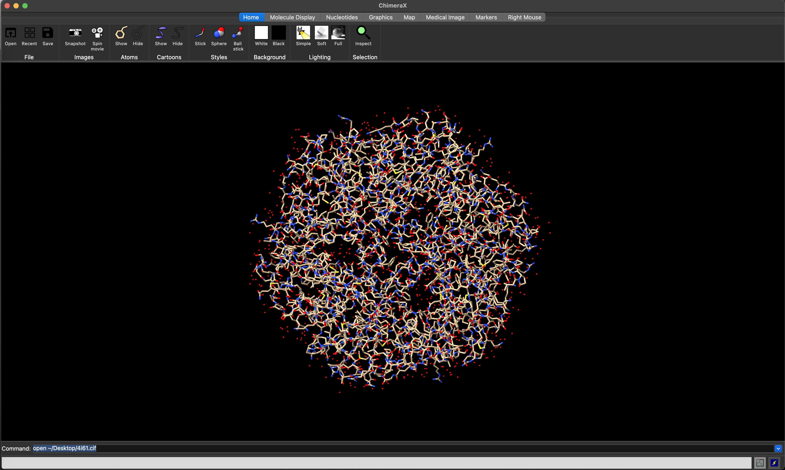
ChimeraX atoms view of the 4I61 structure.5.4.2 Changing atoms representation
The Home ribbon provides icons that allow switching between ball and stick, space-filling/sphere (Figure 5.4), and stick representations of the atomic structure.
style stick
style sphere
style ball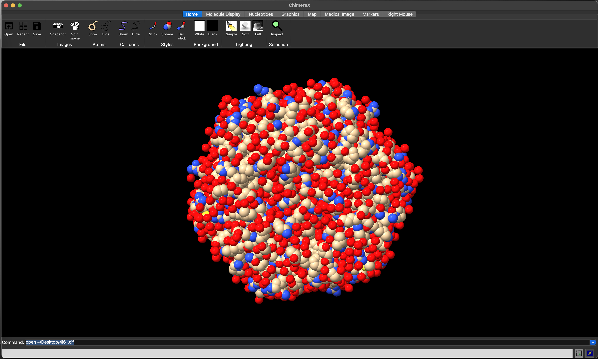
ChimeraX space-filling view of the 4I61 structure.5.4.3 Changing molecule representation
The Molecule Display ribbon allows you to control the colouring and other visualisation features for the model. Clicking on the chain icon will colour each chain in the model differently, to help visually resolve the overall quaternary structure (Figure 5.5).
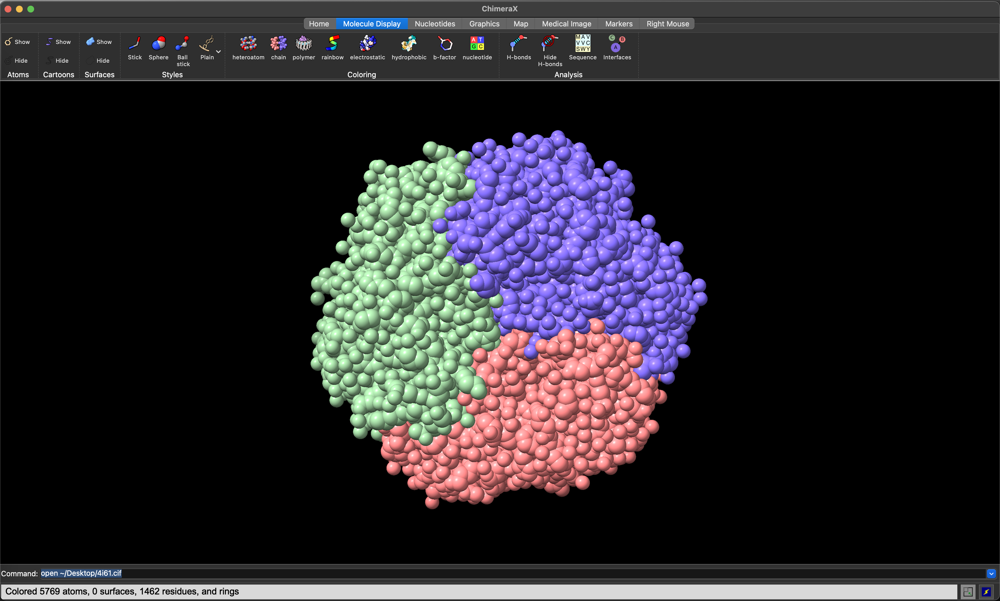
ChimeraX space-filling view of the 4I61 structure, with chain colouring.5.5 Visualising Sequence Conservation
If you have a sequence alignment including the sequence of the protein(s) in your structure, then you can automatically render your model with residues coloured by the extent of sequence conservation.
5.5.1 Requirements
- A structure that includes your protein of interest
- A multiple sequence alignment including your protein of interest
- The sequence corresponding to your protein must be the first sequence in the alignment.
- Your alignment must be in
CLUSTALformat.
5.5.2 Loading the alignment data
The sequence alignment can be loaded using the standard File -> Open menu option (Figure 5.6).
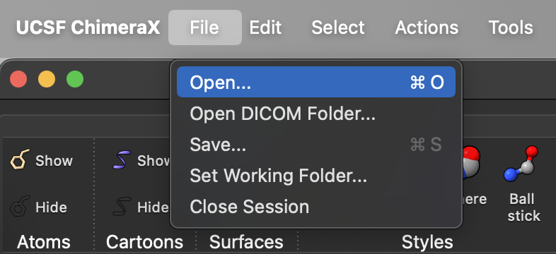
ChimeraX file open menu optionOnce the file dialogue opens, select the sequence alignment file and click the Open button (Figure 5.7).
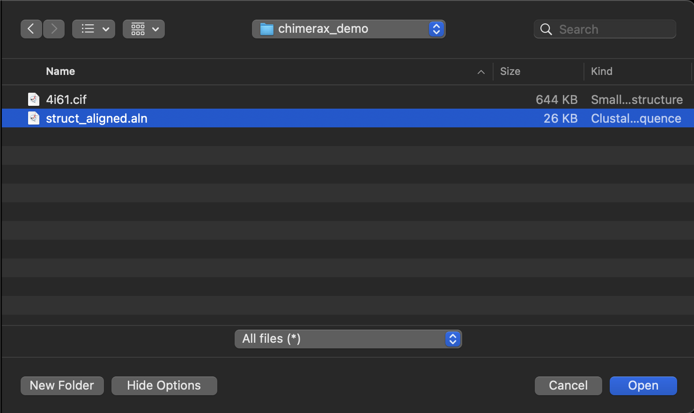
Chimerax file dialogue box. The sequence alignment file is struct_aligned.alnThis will open the Sequence Viewer Window to display your multiple sequence alignment, with a histogram of sequence conservation at the top (Figure 5.8). The sequence associated with your protein model will be highlighted.
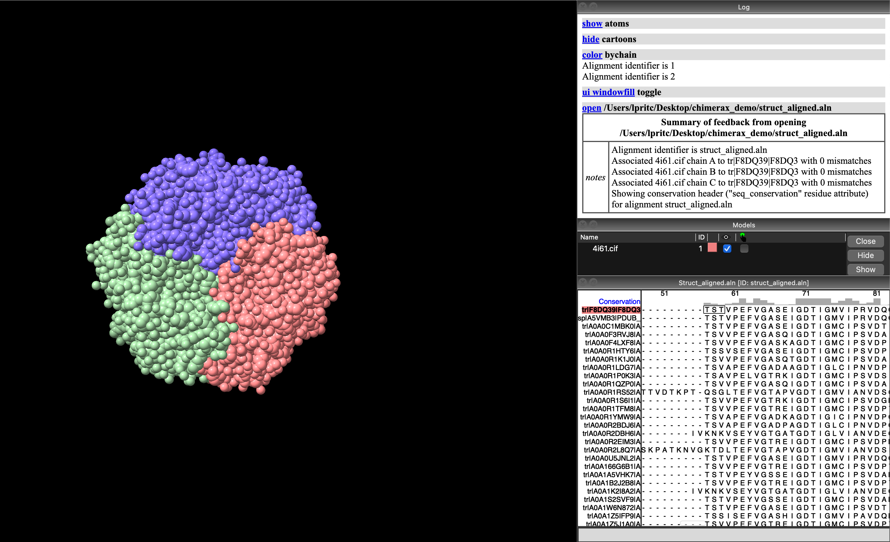
ChimeraX with sequence viewer showing alignment for the model’s protein sequences. The sequence associated with the protein model structure (F8DQ39) is highlighted with a red/orange background.5.5.3 Visualising sequence conservation
ChimeraX associates the sequence conservation, as represented in the histogram in the Sequence Viewer Window, with a variable called seq_conservation. ChimeraX can use this to change the representation of the protein model by assigning the variable to some attribute, such as color (for rendered colour).
We can change this attribute using the command line interface, by entering the command color byattr seq_conservation (Figure 5.9).
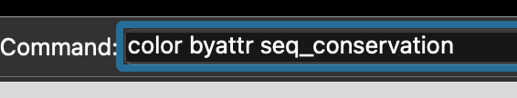
ChimeraX command to colour residues by sequence conservation (As defined in a pre-loaded alignment).This results, by default, in colouring conserved sites in red (the more intense the hue, the more conserved the site), and the variable sites in blue (again, the more intense the hue, the more variable the site). It can be helpful to change the model representation from space-filling sphere to cartoon or similar, so that the interior of the protein can be seen more clearly (Figure 5.10).
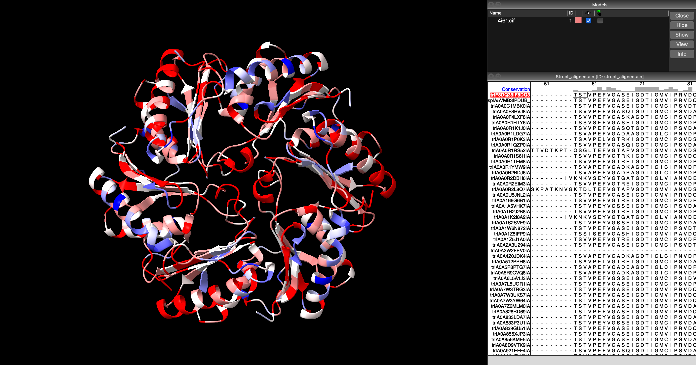
ChimeraX cartoon visualisation of 4I61 showing highly-conserved sites in red, and variable sites in blue. Note how the conserved sites are located where the three subunits meet, and where the hexagonal trimer would interact with other trimers (suggesting selection pressure to retain a particular interaction and conformation), and how the variable sites are primarily located on the convex, outward-facing face of the hexagonal subunit.5.5.4 Selectively visualising conserved sites
We can select sites in the model by attributes, such as sequence conservation, using the select command. For example, to select all sites with a conservation score above 0.5 (i.e. the more conserved sites) we would use select ::seq_conservation > 0.5 (Figure 5.11).
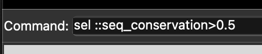
ChimeraX command to select residues above a 0.5 sequence conservation score.Executing this command will select only the sites with a sequence conservation score above 0.5, and highlight them on the current visualisation with a green outline (Figure 5.12).
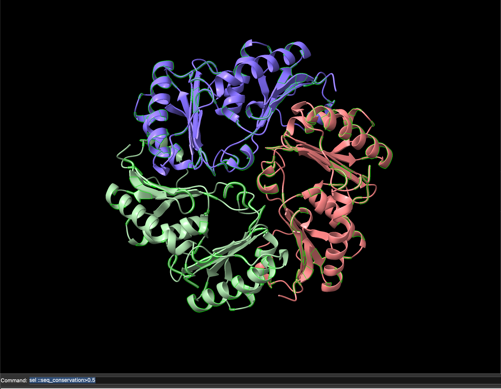
ChimeraX visualisation with sites having above 0.5 sequence conservation score highlihgted in green.With only these sites selected, we can show the atom representations for only these sites by clicking on the Show Atoms icon, or using the command show sel atoms. In (Figure 5.13) this represents those sites as space-filling spheres.
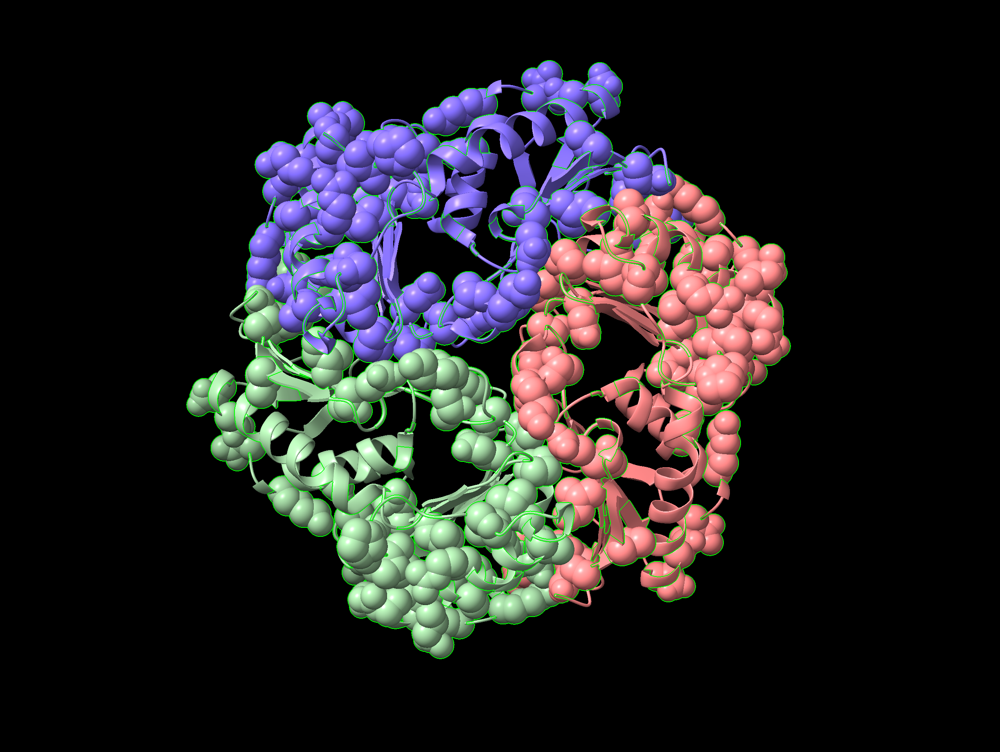
ChimeraX visualisation with sites having above 0.5 sequence conservation score rendered as space-filling spheres.We can then colour the model by sequence conservation as before with color byattr seq_conservation, then select only the low conservation sites with the commmand select ::seq_conservation < 0.5, and recolour them by chain (color sel bychain), to obtain the image in Figure 5.14, where the protein chains are coloured differently, but highly-conserved residues are indicated in red and space-filling form.
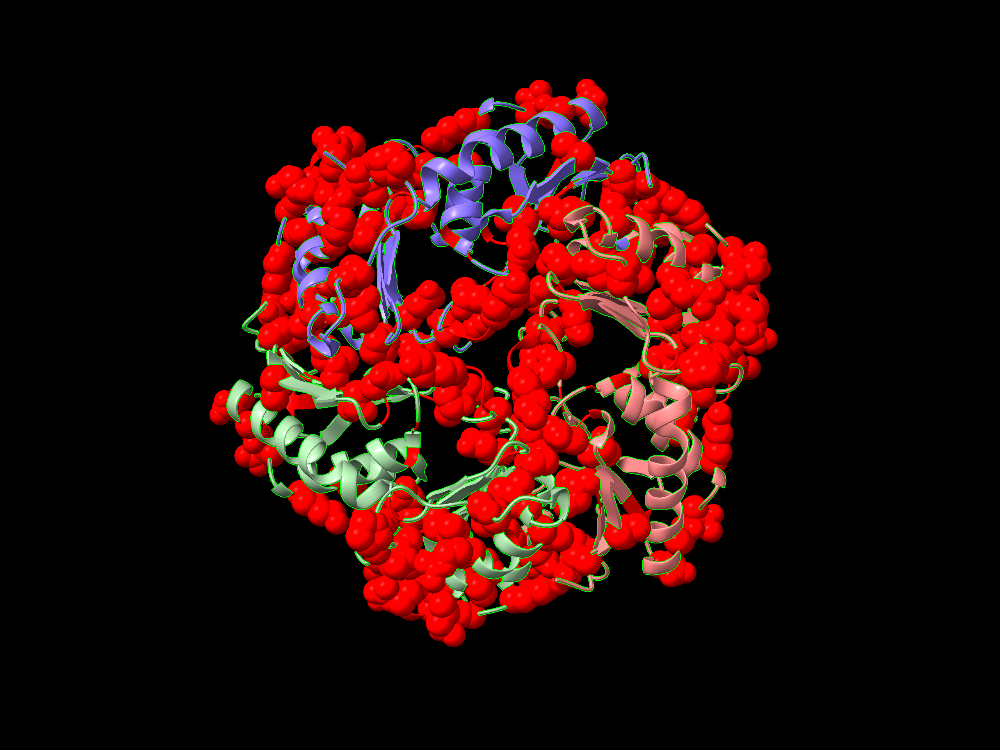
ChimeraX visualisation with sites having above 0.5 sequence conservation score rendered as space-filling spheres and coloured by sequence conservation.